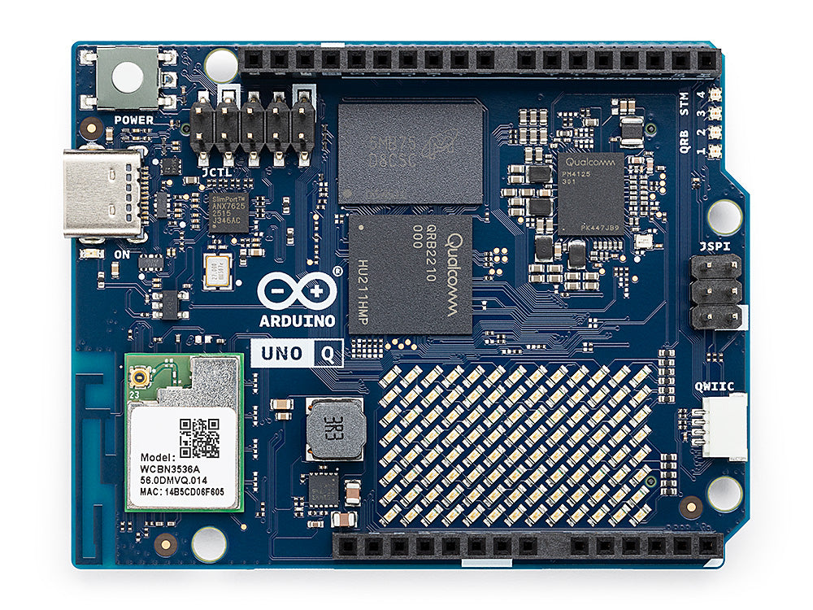
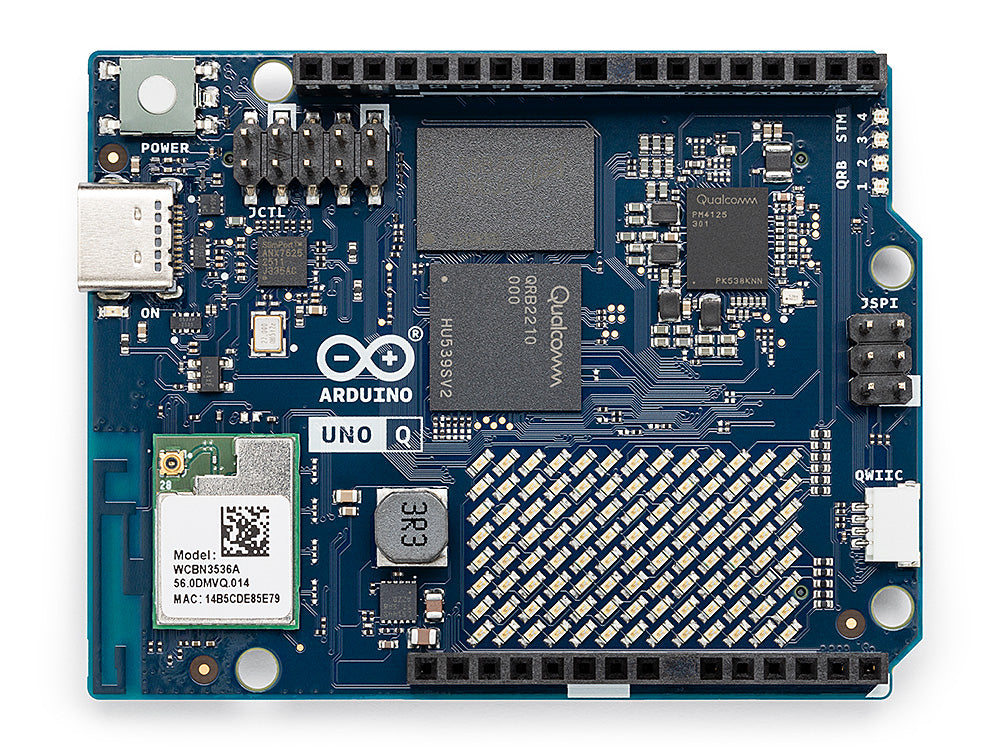

Physical AI Systems
Course syllabus — project seminar & hardware studio
Student-facing course syllabus. This Markdown file is the syllabus—view it on GitHub or any Markdown preview. ETH packaging notes live in syllabus.md. The textbook is the separate Quarto project in ../book/.
Project seminar & hardware studio · Harvard University · ETH Zurich / open follow-along
| Credits | 6 ECTS (proposed) |
| Format | Weekly seminar + kit studio · no written exam |
| Language | English |
| Level | Advanced Bachelor & Master |
| Instructor | Prof. Vijay Janapa Reddi · vj@eecs.harvard.edu · ETZ F 83 |
| Portal | physical.mlsysbook.ai |
| Book | Physical AI: Machine Learning Systems That Sense and Act |
What you will learn
Machine learning usually ends behind glass. A wrong label is a retry. Physical AI begins when software moves mass and spends energy—the world permanently changes. You cannot ctrl+z kinetic energy.
This is the systems course for that transition: not a kinematics survey, not TinyML “fit a model on a chip,” and not an LLM-agents lab. You learn the nuggets that matter when a learned model may act in the physical world—
know · measure · enforce · preserve · prove — then deploy, condition, or refuse.
Who this is for. Students from ML / AI, embedded / ECE, or robotics / control who want to build and measure systems where learned software can command actuators. Studio teams usually mix software-heavy and hardware-heavy backgrounds.
Prerequisites. Intro ML systems (models as components with latency, memory, energy) · comfortable Python and/or C/C++ · willingness to work in a small team on hardware. Helpful: embedded / TinyML. Not required: LLM-agents or a full robotics sequence. Baseline (quantize, prune, serve) → mlsysbook.ai.
What you will do. Build a physical agent across the semester · measure end-to-end paths · put permission on the MCU · keep a short engineering notebook · defend deploy / condition / refuse under a seeded fault.
The curriculum sandwich
Seventeen chapters organized into three parts + capstone. Same spine as the book. Labs track the chapters; formal specifications and code live in labs/.
Part I — The Laws of Physical Action
| # | Chapter & Core Focus |
|---|---|
| 1 | Boundary — When ML becomes Physical AI: closed-loop causal dynamics & the loop charter |
| 2 | Body — Reflected inertia (\(N^2 J_{\text{rotor}}\)), heat dissipation, and electric actuator limits |
| 3 | Brain — What a learned component gives you (VLM / VLA) and the proposal–permission boundary |
| 4 | Nervous System — Multi-rate execution hierarchy, zero-allocation SRAM, and real-time IPC |
| 5 | Data — Demonstrations, compounding covariate shift, and teleoperation physics |
| 6 | Training — Multimodal policies (Diffusion / ACT), contact mechanics, and sim-to-real transfer |
| 7 | Evaluation — The astronomical exposure wall, non-asymptotic bounds, and offline disconnects |
Materials (the filling)
| Book | Physical AI: Machine Learning Systems That Sense and Act — chapter text, figures, contracts |
| Labs | Kit bring-up → measure both brains → VLM intent → 1 kHz MCU enforcer → ship gate → capstone |
| Notebook | Short chapter checkpoints frozen in the engineering notebook (no classical written exam) |
| Baseline | mlsysbook.ai for quantize / prune / serve (not re-taught here) |
Part II — The Architectural Spine (Perceive \(\to\) Intend \(\to\) Enforce)
| # | Chapter & Core Focus |
|---|---|
| 8 | Perception — Spatial encoders (DINOv2, SAM), 3D feature fields, and sensor latency waterfalls |
| 9 | Memory — \(SE(3)\) frame trees, world models, volumetric raycasting, and epistemic drift |
| 10 | Intent — Open-vocabulary 3D grounding, spatial affordances, and expiring intent leases |
| 11 | Planning — Action chunking, receding horizons, jerk bounds, and \(C^2\) spline continuity |
| 12 | Enforcement — Independent MCU safety filters, Control Barrier Functions (CBF-QP), and minimal intervention |
Part III — Systems Realization, Governance & The Frontier
| # | Chapter & Core Focus |
|---|---|
| 13 | Placement — Heterogeneous silicon partitioning, memory crossbars, and PDN voltage droop |
| 14 | Intervention — Shared autonomy, bumpless control transfer, and human takeover dynamics |
| 15 | Verification — The 4-stage HIL ladder, synthetic fault injection, and temporal logic falsification |
| 16 | Release — Claim-Argument-Evidence (CAE) safety cases, GSN, and UL 4600 / ISO deployment gates |
| 17 | Frontier — Observational indistinguishability, shortcut representations, and epistemic limits |
| — | Capstone — Whole-system defense under unannounced seeded hardware/model faults |
Labs (Hardware Studio Track)
| Lab Module | Core Systems Focus | Deliverable / Gate |
|---|---|---|
00-kit-bringup/ |
Dual-brain bring-up, inter-processor link, and safe idle | Hardware Bring-Up |
01-close-the-loop/ |
Advisory mode vs. closed-loop state mutation | Loop Charter |
02-freshness-wall/ & 03-measure-both-brains/ |
Information age (\(\Delta t\)), \(P_{99}\) latency tails, bus contention | Requirements Ledger |
04-runtime-fault-containment/ |
Multi-rate IPC, lock-free seqlocks, MPU crash survival | Runtime Skeleton |
05-perception-frontier/ |
MIPI CSI-2 DMA ring buffers, ViT patch tokenization | Observation Contract |
06-belief-drift/ |
\(SE(3)\) transform trees, timestamp skew, TTL belief leases | State & Timing Model |
07-two-speed-intent/ |
Edge VLM bounding boxes, affordances, expiring intent leases | Intent Schema |
08-mcu-enforcer/ |
Signature Lab: 1 kHz MCU Control Barrier Function vetoes | Enforcement Design |
09-placement-ripple/ |
Heterogeneous resource partitioning (FLOPs, SRAM, Watts, QoS) | Placement Ledger |
10-shadow-and-faults/ & 11-authority-paths/ |
Bumpless joystick override and shadow runtime auditing | Authority Design |
12-learning-turn/ & 13-ship-gate/ |
Cross-layer seeded fault injection & safety case argument | Release Case |
99-design-review/ |
Capstone Jury: Live unannounced fault defense & release verdict | Final Release |
The kit
After the method is clear, you put it on silicon. Studio work uses the Arduino UNO Q—Arduino’s new dual-brain boards built with Qualcomm Dragonwing (Linux MPU) plus a real-time STM32 MCU on one UNO-shaped PCB.
You develop on this kit all semester and learn the Physical AI nuggets on real hardware—not slides alone.
| UNO Q · 2 GB / 16 GB eMMC | UNO Q · 4 GB / 32 GB eMMC |
|---|---|
 |
 |
| MPU | Qualcomm Dragonwing™ QRB2210 · Debian Linux · models, vision, proposals |
| MCU | STM32U585 · real-time I/O, timing, permission |
| SKUs | Same board family: 2 GB for lean studio work · 4 GB when vision / larger models need headroom |
| Why here | One PCB that matches the course: intelligence proposes; the microcontroller can still refuse |
Lab details fill in bring-up and firmware. For the syllabus: this is the kit.
Semester at a glance
| Weeks | Theme |
|---|---|
| 1–4 | Foundations on kit · project proposal |
| 5–8 | Build the agent · midterm · MCU enforcer |
| 9–11 | Place · govern · release draft |
| 12–14 | Dry-run · capstone defense |
Assessment (indicative): studio 20% · midterm 15% · capstone 25% · engineering notebook 40%.
Contact
| Instructor | Prof. Vijay Janapa Reddi · vj@eecs.harvard.edu · ETZ F 83 |
| Book / course | physical.mlsysbook.ai |
| Baseline ML systems | mlsysbook.ai |
| ETH detail notes | syllabus.md |
Use subject [Physical AI] in email.